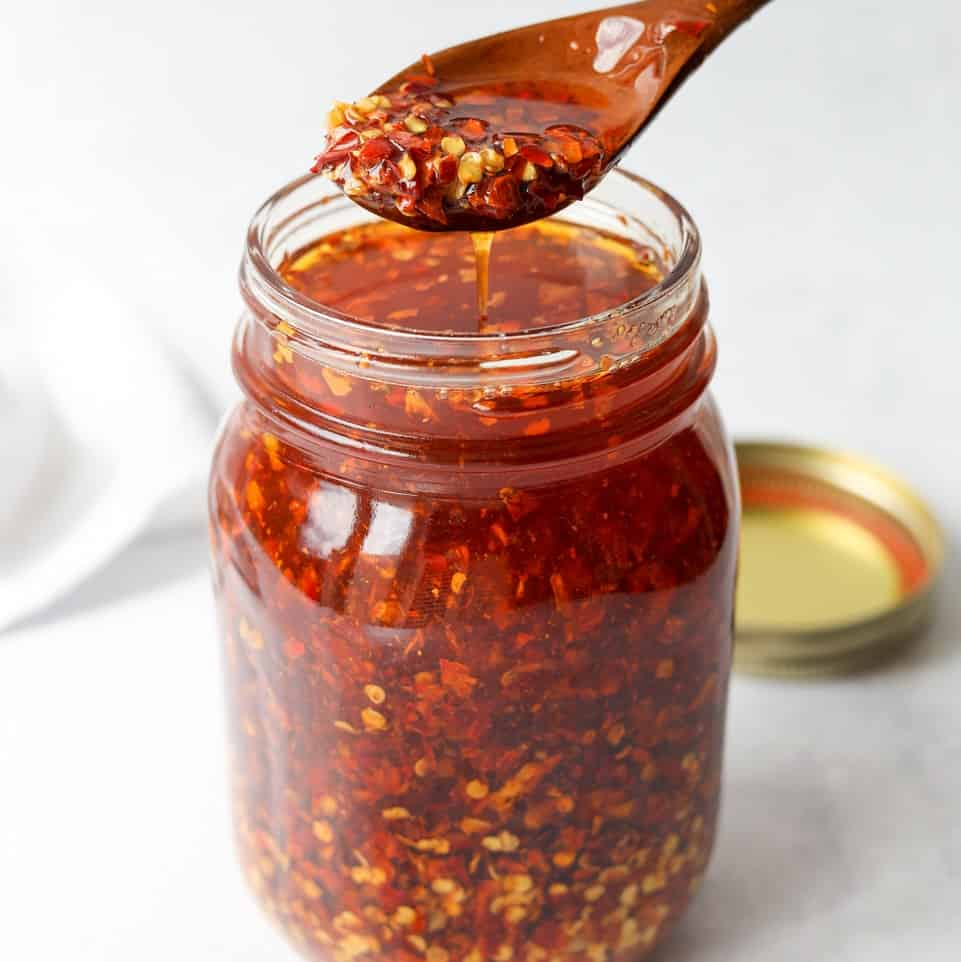

Garlic Chili Oil

A spicy, flavorful oil that can be added to many dishes, particularly noodles.
Ingredients:
- 2/3 cup peanut, sunflower, or other vegetable oil
- 8 cloves garlic, minced
- 1/4 cup roasted, unsalted peanuts
- 2 Tbsp dried chili flakes
- 1/2 cup toasted sesame oil
- 2 Tbsp brown Sugar
- 3 spring onions, white part only, finely sliced
- 2 Tsp salt
Steps
- Place a large pan over medium heat. Combine vegetable oil, chili flakes, garlic, and green onion.
- Mix the ingredients and heat the oil until it begins to bubble, about 6 minutes.
- Once the pan is bubbling, reduce the heat to medium-low and allow it to slowly fry over 15 minutes, stirring occasionaly.
- After 15 minutes, remove from heat and place on a heat-resistant surface.
- Add sesame oil, peanutes, salt, and sugar to hot pan. Mix to dissolve, then allow the pan to cool.
- Once cool, transfer the oil to an airtight jar or other container. Refrigerate and use as desired.
Return to Homepage